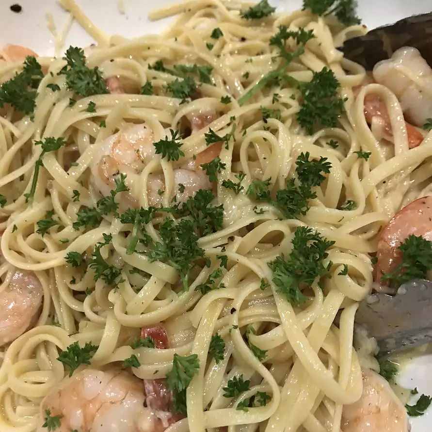

Shrimp Scampi

Light and savory, an easy shrimp recipe for a night in.
This easy shrimp scampi recipe is a simple but elegant shrimp dish.
Combine it with garlic bread and a salad for a delicious dinner.
- Angel Hair Pasta
- Butter
- Shrimp
- Minced Garlic
- Dry White Wine
- Ground Black Pepper
- Parmesan Cheese
- Fresh Parsley
Steps
- Boil large pot of light salted water.
- Cook angel hair pasta, while stirring occasionally until al dente.
- Melt butter in saucepan over medium heat.
- Cook garlic slightly until browned.
- Stir in shrimp, cook until pink (about 3-5 minutes).
- Stir in wine and pepper, bring sauce to a boil for 30 secs.
- Add shrimp to pasta, sprinkle parmesan cheese and toss well.